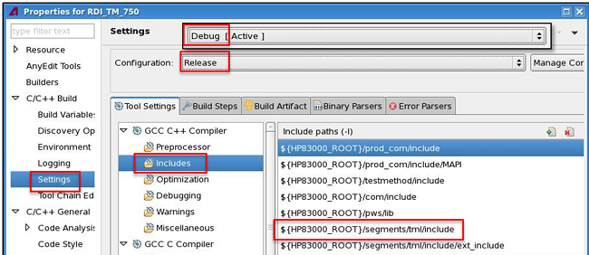

SmartRDI 7.4.4
This section summarizes software changes including new features and enhancements in SmartRDI 7.4.4.
|
Category |
Description |
|---|---|
| General | Multi-port handling: The execution speed of portSync() in the first run is improved. See portSync(). |
| DC | Setting up DC Scale pins with SmartRDI:
|
| Cogo | Sequencer‑controlled searching with cogo: The binary search resolution is improved from 2n-1 to 2n (n is the step number) without any code change. As a result, the improved resolution helps decrease the first-run time. |
Supported SmarTest versions
SmartRDI 7.4.4 supports SmarTest 7.4.4.
SmarTest 7.3.2 or higher versions, by default, sets the include paths in the Settings of Properties for your project. For a legacy project earlier than 7.3.2, some of the include paths may not exist in the Settings if the project runs in a SmarTest and SmartRDI 7.4.4 environment.
If the path ${HP83000_ROOT}/segments/tml/include is missing, check the include paths and add it for both Debug and Release builds.
